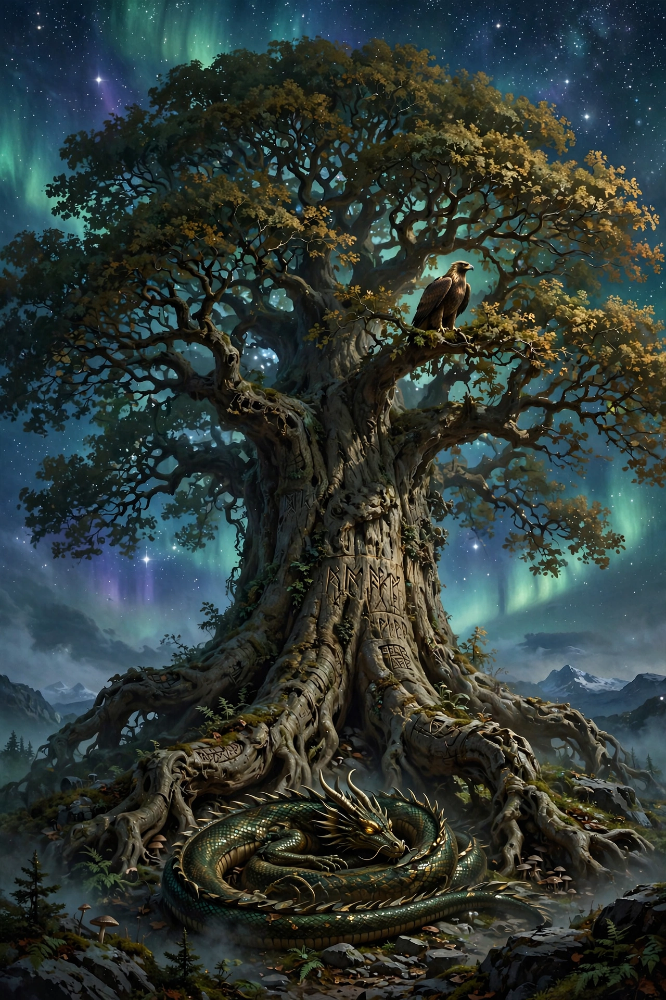

| Yggdrasil | |
|---|---|
 | |
| Type | World tree |
| Tradition | Norse mythology |
| Sources | Poetic Edda, Prose Edda |
| Realms connected | Nine realms |
Yggdrasil (Old Norse: Yggdrasill) is an immense and central sacred tree in Norse cosmology. Around it exists all else, including the Nine Worlds. Yggdrasil is attested in the Poetic Edda, compiled in the 13th century from earlier traditional sources, and in the Prose Edda, written in the 13th century by Snorri Sturluson. In both sources, Yggdrasil is an immense ash tree that is center to the cosmos and considered very holy.
The gods go to Yggdrasil every day to assemble at their things, traditional governing assemblies. The branches of Yggdrasil extend far into the heavens, and the tree is supported by three roots that extend far away into other locations; one to the well Urðarbrunnr in the heavens, one to the spring Hvergelmir, and another to the well Mímisbrunnr. Creatures live within Yggdrasil, including the dragon Níðhöggr, an unnamed eagle, and the stags Dáinn, Dvalinn, Duneyrr and Duraþrór.
The name Yggdrasil is generally considered to mean "Ygg's horse". Ygg ("Terrible One") is one of the many names of the god Odin, and drasill is a poetic word for "horse". The interpretation recalls the kenning-like image of Odin hanging himself from the tree for nine nights to gain knowledge of the runes, as described in the poem Hávamál; the gallows is sometimes called the "horse" of the hanged.
In the Poetic Edda, Yggdrasil is mentioned in the poems Völuspá, Hávamál, Grímnismál, and Vafþrúðnismál. In Grímnismál, Odin describes the tree's three roots and the creatures that gnaw and dwell upon it, remarking that Yggdrasil suffers more agony than any man can know — a hart bites it from above, it decays at its sides, and Níðhöggr rends it from beneath.
In the Prose Edda books Gylfaginning and Skáldskaparmál, the tree is described as the largest and best of all trees, its branches spreading over all the world and reaching above the sky. Beneath one root stands the well of Urd, where the Norns tend the tree and decide the fates of men.
At Ragnarök, the prophesied battle at the end of the world, Yggdrasil will shake and groan but remain standing. After the cataclysm, the reborn world rises from the sea, and the human survivors Líf and Lífþrasir are said to have hidden themselves in Hoddmímis holt — a wood sometimes identified with Yggdrasil itself — emerging to repopulate the earth.